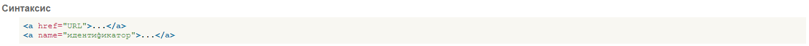

Описание
Тег:
-a-
- является одним из важных элементов HTML и предназначен для создания ссылок. В зависимости от присутствия атрибутов name или href тег -a- устанавливает
ссылку или якорь. Якорем называется закладка внутри страницы, которую можно указать в качестве цели ссылки. При использовании ссылки, которая указывает на якорь,
происходит переход к закладке внутри веб-страницы.
Для создания ссылки необходимо сообщить браузеру, что является ссылкой, а также указать адрес документа, на который следует сделать ссылку.
В качестве значения атрибута href используется адрес документа (URL, Universal Resource Locator, универсальный указатель ресурсов),
на который происходит переход. Адрес ссылки может быть абсолютным и относительным. Абсолютные адреса работают везде и всюду независимо от имени сайта или веб-страницы,
где прописана ссылка. Относительные ссылки, как следует из их названия, построены относительно текущего документа или корня сайта.
